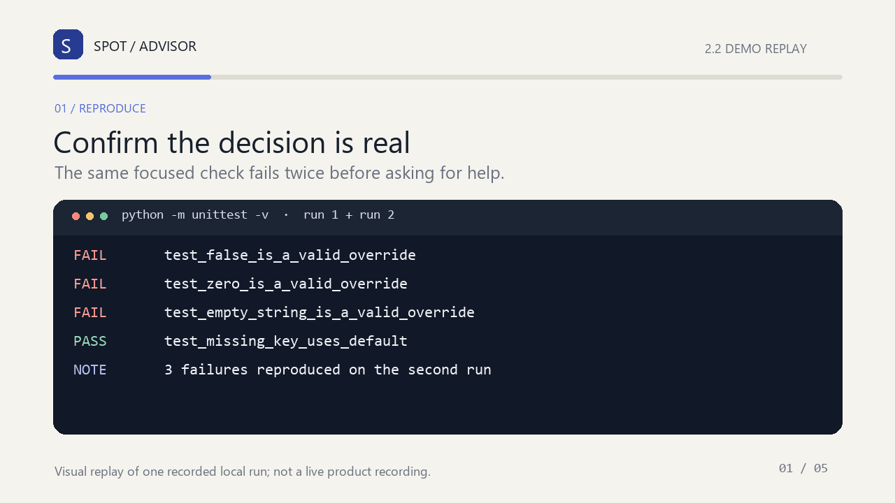

Let a low-cost model code. Ask Astra when it gets stuck.
We ran both workflows on the same {repair[n]} public code repairs. These USD estimates use the study’s API rates and requests with priceable usage records.
Set up your executor and advisor| Astra alone | Luna Max + Spot Advisor |
|---|---|
| ${repair[cost][astra_only]:.2f} | ${repair[cost][spot_advisor]:.2f} |
| {repair[arms][astra_only][accepted]} / {repair[n]} passed | {repair[arms][spot_advisor][accepted]} / {repair[n]} passed |
| {repair[timely][astra_only]} / {repair[n]} within 15 min | {repair[timely][spot_advisor]} / {repair[n]} within 15 min |
The priced requests cost {repair[lower]:.1f}% less with Luna Max. It consulted Astra on {repair[arms][spot_advisor][tasks_with_consultation]} of {repair[n]} tasks.
The estimate excludes {repair[missing][astra_only]} unpriced Astra-only requests and {repair[missing][spot_advisor]} Luna + advisor requests. See receiptsSet up your two models
Install the skill
In your project directory, run
npx skills add spot-advisor/spot-advisor --skill advisor --agent codexFor the CLI installer, use Node.js with npx. The skill runs on Python 3.10+. First time using Codex? Run
codex login.Installing from ZIP?
Extract the ZIP, then place its entire
advisorfolder inside.agents/skills/in your project and reopen Codex.In your project directory, run
npx skills add spot-advisor/spot-advisor --skill advisor --agent claude-codeFor the CLI installer, use Node.js with npx. The skill runs on Python 3.10+. Sign in to Claude Code for execution and run
codex loginonce for the Astra advisor.Installing from ZIP?
Extract the ZIP, then place its entire
advisorfolder inside.claude/skills/in your project and reopen Claude Code.Choose who does what
ExecutorLunaYour low-cost Claude modelReads files, edits code and runs tests.
AdvisorAstraAnswers one focused question.
codex -m gpt-6-lunaStart this session in your project. The benchmark used Luna at max reasoning effort.
Start
claudein your project and use/modelto select a low-cost executor available to your account. The cost study above used Luna Max.With Codex signed in, the default advisor is
gpt-6.2-astra.Set Astra explicitly
To override an existing setting, run the command for your shell before starting the executor.
PowerShell
$env:CODEX_ADVISOR_MODEL = 'gpt-6.2-astra'Bash / Zsh
export CODEX_ADVISOR_MODEL=gpt-6.2-astraGive it a failing test
Fix this failing test. Reproduce it locally first. If two plausible fixes remain after your checks, use Spot Advisor to ask Astra once. Apply the fix yourself, rerun the test, and report the result.
Recorded example · An explicit
Falsekept reverting to a default. Astra suggested checking if the key existed. The agent changed one line and all four tests passed.
SWE-bench Pro V2
What did the repairs cost?
For the same {repair[matched_n]} tasks with complete receipts on both sides, estimated costs were ${repair[matched_cost][astra_only]:.2f} and ${repair[matched_cost][spot_advisor]:.2f}. That’s {repair[matched_lower]:.1f}% lower with Luna and the advisor.
These are API-equivalent estimates at the study’s November 20, 2026 rates. Missing receipts leave the full-run cost unknown. Both workflows passed the same number of repairs. The study leaves their quality difference uncertain.
| Measure | Astra alone | Luna Max + advisor |
|---|---|---|
| Priceable request subtotal (USD) | ${repair[cost][astra_only]:.2f} | ${repair[cost][spot_advisor]:.2f} |
| Tasks with complete usage records | {repair[arms][astra_only][usage_complete]} / {repair[n]} | {repair[arms][spot_advisor][usage_complete]} / {repair[n]} |
| Requests missing a price | {repair[missing][astra_only]} | {repair[missing][spot_advisor]} |
| Verified repairs | {repair[arms][astra_only][accepted]} / {repair[n]} | {repair[arms][spot_advisor][accepted]} / {repair[n]} |
| Verified within 15 minutes | {repair[timely][astra_only]} / {repair[n]} | {repair[timely][spot_advisor]} / {repair[n]} |
| Cost on the same {repair[matched_n]} fully priced tasks | ${repair[matched_cost][astra_only]:.2f} | ${repair[matched_cost][spot_advisor]:.2f} |
Spot Advisor 2.4 · Formal benchmark
What should an agent send in a handoff?
Each of {tasks} held-out tasks ran with a full checkpoint, a free-text summary, and a structured Spot Advisor packet. An independent grader checked the delivered files against the same criteria within a {deadline}-second deadline per run.
| Metric | Full record | Free summary | Scoped packet |
|---|---|---|---|
| Tasks passed overall | {scores[all][full][verified]} / {tasks} | {scores[all][summary][verified]} / {tasks} | {scores[all][scoped][verified]} / {tasks} |
| Text passed | {scores[text][full][verified]} / {scores[text][full][n]} | {scores[text][summary][verified]} / {scores[text][full][n]} | {scores[text][scoped][verified]} / {scores[text][full][n]} |
| Image passed | {scores[image][full][verified]} / {scores[image][full][n]} | {scores[image][summary][verified]} / {scores[image][full][n]} | {scores[image][scoped][verified]} / {scores[image][full][n]} |
| Audio passed | {scores[audio][full][verified]} / {scores[audio][full][n]} | {scores[audio][summary][verified]} / {scores[audio][full][n]} | {scores[audio][scoped][verified]} / {scores[audio][full][n]} |
| Median elapsed | {scores[all][full][median_seconds]:.1f} s | {scores[all][summary][median_seconds]:.1f} s | {scores[all][scoped][median_seconds]:.1f} s |
| Advisor input tokens | {scores[all][full][advisor][input_tokens][known_total]:,} | {scores[all][summary][advisor][input_tokens][known_total]:,} | {scores[all][scoped][advisor][input_tokens][known_total]:,} |
| Estimated cost (USD) | {scores[all][full][known_dollars]:.2f} | {scores[all][summary][known_dollars]:.2f} | {scores[all][scoped][known_dollars]:.2f} |
Delivery quality. Scoped was {paired_difference:+.1f} percentage points versus full. The one-sided 95% lower bound of {paired_lower:.1f} points cleared the registered −5-point noninferiority margin for this workload.
Packet size and cost. Scoped used fewer text characters on {shorter} of {tasks} tasks and recorded more advisor input tokens than full. Free-summary advisor input receipts cover {scores[all][summary][advisor][input_tokens][known_rows]} of {tasks} tasks. Cost estimates cover {scores[all][full][cost_known]} of {tasks} tasks per format and use API-equivalent prices. The speech route lacks a price, leaving overall cost savings unknown.
Research manuscript · v1
What Survives a Structured Handoff?
The paper reports paired uncertainty, packet lengths, and cost per verified delivery for the tasks with complete pricing.
Manuscript release and TeX sourceSee exactly what would be sent.
With Git and Python 3.10+ installed, run these commands in a terminal. If you already have the v2.4.0 checkout, run the last line from its root. The preview prints the request locally.
Follow the full demogit clone --depth 1 --branch v2.4.0 https://github.com/spot-advisor/spot-advisor.git
cd spot-advisor
python skills/advisor/scripts/ask_expert.py --preview --state-file demo/state.json --session-file demo-preview.json --question "How should this lookup handle an explicit False?"Acceptance: False, 0, and an empty string remain valid overrides. | A missing key uses the default.

Spot Advisor 2.4.0
Scoped consultations carry the current acceptance criteria and digests of checked artifacts. Automated testers verified six installed-skill walkthroughs across Codex and Claude Code using the qualified text, vision and audio routes.